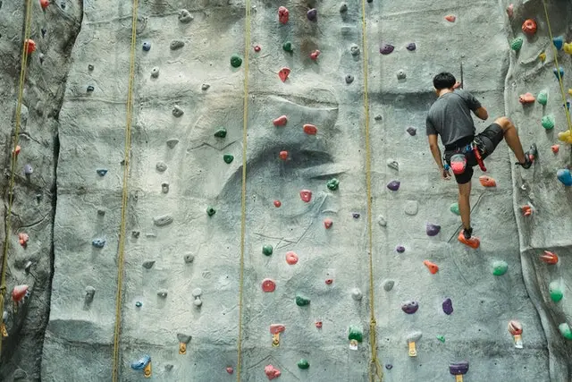

Jaki rodzaj periodyzacji
wybrać w swoim treningu?

Periodyzacja jest organizacją naszego treningu ,można zrobić to na wiele sposobów, każdy rodzaj dobrze zastosowany działa i przynosi duże korzyści. Główne rodzaje periodyzacji używane w treningu wspinaczkowym
Linear Periodization
Bardzo prosta i działająca opcja, w której skupiamy się nad jedną cechą, przykładowo miesiąc treningów na chwytotablicy.
Warto użyć tej periodyzacji dla osób ,które zaczynają i nie są przyzwyczajone do dużych objętości treningowych, lub dla zaawansowanych wspinaczy , którzy już bardzo długo trenują i muszą skupić się na jednym bodźcu, żeby widzieć postęp.
Minusem jest brak utrzymywania reszty cech skupiając się tylko na jednej.
Nonlinear Periodization
Periodyzacja, w której trenujemy każdą cechę w tym samym czasie, jest to najczęściej używana opcja i zazwyczaj najlepiej działająca.
Wymaga ona zaawansowanego planowania tak ,żeby uniknąć efektu ingerencji wytrzymałości na siłę , który wiąże się z wolniejszym postępem siły i mocy.
Jest to znakomita opcja planowania dla osób ,które cały czas chcą być w formie, nie tracąc zbudowanej siły czy wytrzymałości ,szczególnie przydaje się podczas sezonu.
Ta forma planowania jest idealną opcją dla zaawansowanych wspinaczy ,którzy są przyzwyczajeni do większej objętości treningowej ,przykładowo wspinacz, który ma słabe palce i wytrzymałość może przeznaczyć 80% czasu na wzmocnienie palców i wytrzymałości natomiast 20% na utrzymanie reszty cech.
Obie periodyzacje posiadają jeszcze wiele odmian np. w NLP (Nonlinear Periodization) możemy wybrać opcje trenowania wszystkiego równomiernie, czyli robimy 1 trening wytrzymałości, 1 trening boulderowy, jeden trening na chwytotablicy.
Dla elitarnych wspinaczy może to być łączenie treningów np. chwytotablica i bouldering na jednym treningu.